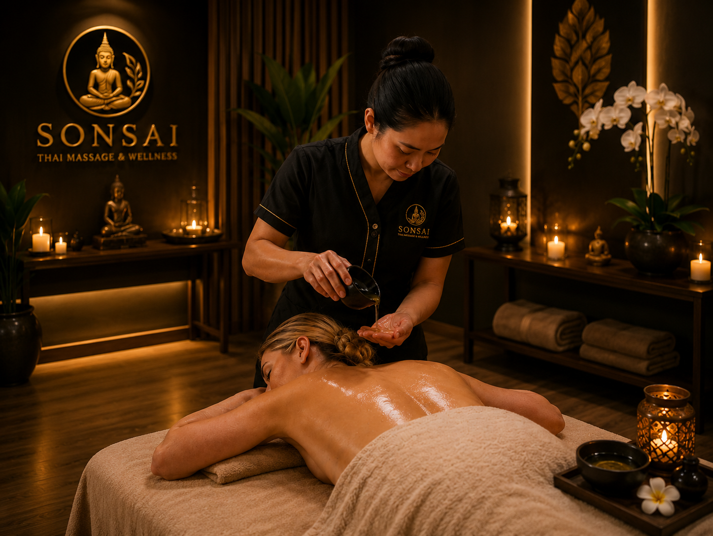

עיסוי תאילנדי בשמן
עיסוי תאילנדי בשמן הוא טיפול גוף מקצועי המשלב טכניקות מסורתיות מעולם העיסוי התאילנדי עם תנועות ארוכות, זורמות ומרגיעות. הטיפול מתבצע באמצעות שמנים איכותיים המסייעים בהרפיית השרירים ובהפחתת מתחים שהצטברו בגוף במהלך היום. במהלך העיסוי מושם דגש על שחרור עומסים, שיפור זרימת הדם והענקת תחושת רוגע ואיזון לגוף ולנפש. זהו טיפול מפנק ומחדש המתאים לכל מי שמחפש רגע של שלווה, התחדשות ורווחה כללית.
30 דק׳ – 60₾ | 60 דק׳ – 100₾